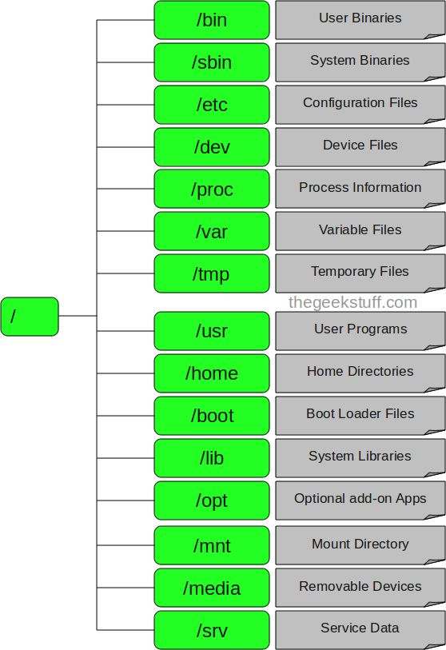
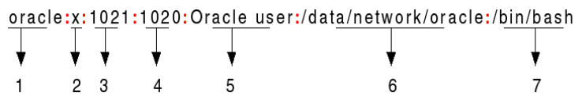

class: center, middle # ОС Практикум --- # Всички ли имат профили или Unix-like OS? ## Можете ли да се логнете? ## putty: ssh 62.44.100.23 --- # Сменете си паролите, ако не сте. ## Някой знае ли с коя команда става това? --- # GNU и Linux --- # GNU * идея за свободна операционна система * напълно съвместима с предхождащата я Unix (тя е платена). # Linux Линукс е ядрото — онази програма в системата, която заделя ресурсите на машината за другите програми, които изпълнявате. --- # GNU/Linux Линукс се използва обикновено в комбинация с операционната система GNU. Цялата система всъщност е GNU, с Линукс като добавка, или GNU/Линукс. Всички така наречени „Линукс“ дистрибуции на практика са дистрибуции на GNU/Линукс. --- # Стандарти * многообразие * комуникация --- # Споменали са ви за няколко стандарта: * POSIX - Portable Operating System Interface * FHS - Filesystem Hierarchy Standard --- # POSIX A family of standards for maintaining compatibility between operating systems. Make uniform the application programming interfaces. When you write your programs to rely on POSIX standards, you can be pretty sure to be able to port them easily among a large family of Unix derivatives. --- # Важни неща, които POSIX дефинира: 1. C API - как езика С ще си говори с хардуера - създаване на файлове, директории, четене на файлове, управляване на процеси и нишки. 1. CLI - command line interface - ls, cd, echo Много от тези програми директно използват C API. 1. Shell езика. a=b; echo "$a" 1. Environment variables, които всеки има E.g.: HOME, PATH. 1. Program exit status ANSI C says 0 or EXIT_SUCCESS for success, EXIT_FAILURE for failure, and leaves the rest implementation defined. --- # FHS Стандарт как ще са ни подредени директориите и в коя какво ще има. ---  --- /bin Важни команди, за всички users e.g., cat, ls, cp. /sbin Системни binary файлове - booting, restoring, recovering, and/or repairing. /etc конфигурационни файлове /etc/opt Конфигурацинни файлове за пакетите ни в /opt. --- /etc/passwd  1. потребител 1. парола 1. UID 1. GID 1. описание 1. home directory 1. shell --- /dev файлове за устройствата ни. /proc Информацията за процесите и ядрото се представят във формата на файлове. /var Файлове, които се променят постоянно, например логове. /var/cache Cache данните на разни apps. --- /tmp Временни файлове. /home home директориите на потребителите. /boot файлове за bootloader. /lib Важни библиотеки за изпълнимите файлове в /bin и /sbin --- /usr програми на потребителя, не на ОС. Има цяла подйерархия от директории вътре. usr/bin потребителски команди usr/include и usr/lib - header файлове и библиотеки за тези команди. usr/sbin Неважни system binaries usr/local Софтуер, който не е на ОС. --- ## /usr/local ## /opt /opt is reserved for the installation of add-on application software packages. /usr/local Програми, които сами build-ваме: ./configure; make; make install /opt за вече build-нати пакети, всеки в собствената си директория. например при мен - chrome, sublime --- # Да си припомним малко команди сега... ## Какво правеха: * whoami * who * su * sudo --- * whoami - Print the user name associated with the current effective user * id - Print user and group information for the specified USER, or (when USER omitted) for the current user. * who - who - show who is logged on --- ## sudo and su <img src="sandwich.png" style="width: 80%;"> --- # sudo vs. su ## su За смяна на потребители (без аргументи сменя към super user). Иска парола на потребителя, към когото искаме да сменим. ## sudo Пуска *една* команда от името на друг потребител. Иска парола на текущия потребител. --- # man - Отговорът на всичко! --- # ls Да видим съдържанието на директория. -a, --all do not ignore entries starting with . -l дълъг формат print the file type, file mode bits, number of hard links, owner name, group name, size, and timestamp -l --author четвъртата колонка е кой е създал файла --- # pwd print working directory # cd Change directory ## Релативни пътища - ., .. ## ~, - --- # Създаване ## mkdir ## touch # Работа със създадените неща ## cp ## mv --- # Задача Разгледайте какво съдържа директорията /bin. Тази директория съдържа важни binary, изпълними файлове. Колко от нещата познавате и знаете какво правят? Напишете. --- # Задача Направете директория practice-test в home директорията ви. Вътре направете директория test1. Можете ли да направите тези две неща наведнъж? Разгледайте нужната man страница. След това създайте празен файл вътре, който да се казва test.txt, преместете го в practice-test чрез релативни пътища. --- # Задача Копирайте файловете f1, f2, f3 от директорията /tmp/os2018/practice/01/ в директория dir1, намираща се във вашата home директория. Ако нямате такава, създайте я. --- # Задача Нека файлът f2 бъде преместен в директория dir2, намираща се във вашата home директория и бъде преименуван на numbers.